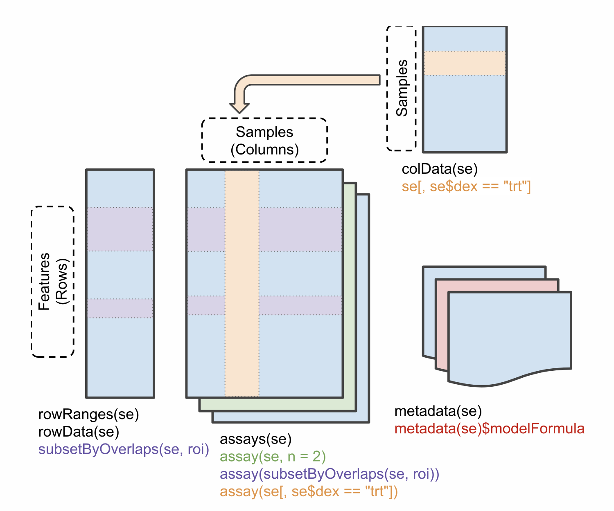

Objectives
SummarizedExperiment class, extensively used in omics
analyses.SummarizedExperiment objects.Data in bioinformatics is often more complex than the basic data types we have seen so far. To deal with this, developers define specialised data containers (termed classes) that match the properties of the data they need to handle.
This aspect is central to the Bioconductor6 project which uses the same core data infrastructure across packages. This certainly contributed to Bioconductor’s success. Bioconductor package developers are advised to make use of existing infrastructure to provide coherence, interoperability and stability to the project as a whole.
To illustrate such an omics data container, we’ll present the
SummarizedExperiment class.
The figure below represents the anatomy of SummarizedExperiment.

Objects of the class SummarizedExperiment contain :
One (or more) assay(s) containing the quantitative omics data (expression data), stored as a matrix-like object. Features (genes, transcripts, proteins, …) are defined along the rows and samples along the columns.
A sample metadata slot containing sample co-variates, stored as a data frame. Rows from this table represent samples (rows match exactly the columns of the expression data). Columns from this table represent sample covariates along the columns.
A feature metadata slot containing feature co-variates, stored as data frame. The rows of this dataframe’s match exactly the rows of the expression data.
The coordinated nature of the high throughput data guarantees that the dimensions of the different slots will always match (i.e the columns in the expression data and then rows in the sample metadata, as well as the rows in the expression data and feature metadata) during data manipulation.
The metadata slots can grow additional co-variates (columns) without affecting the other structures.
Let’s return to the rna dataset that we have used previously.
rna <- read_csv("data/rnaseq.csv")
rna## # A tibble: 32,428 × 19
## gene sample expre…¹ organ…² age sex infec…³ strain time tissue mouse
## <chr> <chr> <dbl> <chr> <dbl> <chr> <chr> <chr> <dbl> <chr> <dbl>
## 1 Asl GSM254… 1170 Mus mu… 8 Fema… Influe… C57BL… 8 Cereb… 14
## 2 Apod GSM254… 36194 Mus mu… 8 Fema… Influe… C57BL… 8 Cereb… 14
## 3 Cyp2d22 GSM254… 4060 Mus mu… 8 Fema… Influe… C57BL… 8 Cereb… 14
## 4 Klk6 GSM254… 287 Mus mu… 8 Fema… Influe… C57BL… 8 Cereb… 14
## 5 Fcrls GSM254… 85 Mus mu… 8 Fema… Influe… C57BL… 8 Cereb… 14
## 6 Slc2a4 GSM254… 782 Mus mu… 8 Fema… Influe… C57BL… 8 Cereb… 14
## 7 Exd2 GSM254… 1619 Mus mu… 8 Fema… Influe… C57BL… 8 Cereb… 14
## 8 Gjc2 GSM254… 288 Mus mu… 8 Fema… Influe… C57BL… 8 Cereb… 14
## 9 Plp1 GSM254… 43217 Mus mu… 8 Fema… Influe… C57BL… 8 Cereb… 14
## 10 Gnb4 GSM254… 1071 Mus mu… 8 Fema… Influe… C57BL… 8 Cereb… 14
## # … with 32,418 more rows, 8 more variables: ENTREZID <dbl>, product <chr>,
## # ensembl_gene_id <chr>, external_synonym <chr>, chromosome_name <chr>,
## # gene_biotype <chr>, phenotype_description <chr>,
## # hsapiens_homolog_associated_gene_name <chr>, and abbreviated variable names
## # ¹expression, ²organism, ³infectionnames(rna)## [1] "gene"
## [2] "sample"
## [3] "expression"
## [4] "organism"
## [5] "age"
## [6] "sex"
## [7] "infection"
## [8] "strain"
## [9] "time"
## [10] "tissue"
## [11] "mouse"
## [12] "ENTREZID"
## [13] "product"
## [14] "ensembl_gene_id"
## [15] "external_synonym"
## [16] "chromosome_name"
## [17] "gene_biotype"
## [18] "phenotype_description"
## [19] "hsapiens_homolog_associated_gene_name"In this table, we can find gene expression per gene and per sample, as well as columns describing the samples (orgnanism, age, sex…), and columns describing the genes (ENTREZID, product, chromosome_name, gene_biotype…)
We will convert this table in a SummarizedExperiment.
To do so we will extract from this table:
A count matrix that will be used as the assay
A table describing the samples that will be used as the sample metadata slot
A table describing the genes that will be used as the features metadata slot
count matrix
counts <- rna %>%
select(gene, sample, expression) %>%
pivot_wider(names_from = sample,
values_from = expression)
count_matrix <- counts %>% select(-gene) %>% as.matrix()
rownames(count_matrix) <- counts$gene
count_matrix[1:5, ]## GSM2545336 GSM2545337 GSM2545338 GSM2545339 GSM2545340 GSM2545341
## Asl 1170 361 400 586 626 988
## Apod 36194 10347 9173 10620 13021 29594
## Cyp2d22 4060 1616 1603 1901 2171 3349
## Klk6 287 629 641 578 448 195
## GSM2545342 GSM2545343 GSM2545344 GSM2545345 GSM2545346 GSM2545347
## Asl 836 535 586 597 938 1035
## Apod 24959 13668 13230 15868 27769 34301
## Cyp2d22 3122 2008 2254 2277 2985 3452
## Klk6 186 1101 537 567 327 233
## GSM2545348 GSM2545349 GSM2545350 GSM2545351 GSM2545352 GSM2545353
## Asl 494 481 666 937 803 541
## Apod 11258 11812 15816 29242 20415 13682
## Cyp2d22 1883 2014 2417 3678 2920 2216
## Klk6 742 881 828 250 798 710
## GSM2545354 GSM2545362 GSM2545363 GSM2545380
## Asl 473 748 576 1192
## Apod 11088 15916 11166 38148
## Cyp2d22 1821 2842 2011 4019
## Klk6 894 501 598 259
## [ reached getOption("max.print") -- omitted 1 row ]table describing the samples
sample_metadata <- rna %>%
select(sample, organism, age, sex, infection, strain, time, tissue, mouse)
# Many lines are repeated, as in rna, each gene (n = 1474) was analysed in each sample!
sample_metadata## # A tibble: 32,428 × 9
## sample organism age sex infection strain time tissue mouse
## <chr> <chr> <dbl> <chr> <chr> <chr> <dbl> <chr> <dbl>
## 1 GSM2545336 Mus musculus 8 Female InfluenzaA C57BL/6 8 Cerebell… 14
## 2 GSM2545336 Mus musculus 8 Female InfluenzaA C57BL/6 8 Cerebell… 14
## 3 GSM2545336 Mus musculus 8 Female InfluenzaA C57BL/6 8 Cerebell… 14
## 4 GSM2545336 Mus musculus 8 Female InfluenzaA C57BL/6 8 Cerebell… 14
## 5 GSM2545336 Mus musculus 8 Female InfluenzaA C57BL/6 8 Cerebell… 14
## 6 GSM2545336 Mus musculus 8 Female InfluenzaA C57BL/6 8 Cerebell… 14
## 7 GSM2545336 Mus musculus 8 Female InfluenzaA C57BL/6 8 Cerebell… 14
## 8 GSM2545336 Mus musculus 8 Female InfluenzaA C57BL/6 8 Cerebell… 14
## 9 GSM2545336 Mus musculus 8 Female InfluenzaA C57BL/6 8 Cerebell… 14
## 10 GSM2545336 Mus musculus 8 Female InfluenzaA C57BL/6 8 Cerebell… 14
## # … with 32,418 more rows# Remove redundancy
sample_metadata <- unique(sample_metadata)
sample_metadata## # A tibble: 22 × 9
## sample organism age sex infection strain time tissue mouse
## <chr> <chr> <dbl> <chr> <chr> <chr> <dbl> <chr> <dbl>
## 1 GSM2545336 Mus musculus 8 Female InfluenzaA C57BL/6 8 Cerebel… 14
## 2 GSM2545337 Mus musculus 8 Female NonInfected C57BL/6 0 Cerebel… 9
## 3 GSM2545338 Mus musculus 8 Female NonInfected C57BL/6 0 Cerebel… 10
## 4 GSM2545339 Mus musculus 8 Female InfluenzaA C57BL/6 4 Cerebel… 15
## 5 GSM2545340 Mus musculus 8 Male InfluenzaA C57BL/6 4 Cerebel… 18
## 6 GSM2545341 Mus musculus 8 Male InfluenzaA C57BL/6 8 Cerebel… 6
## 7 GSM2545342 Mus musculus 8 Female InfluenzaA C57BL/6 8 Cerebel… 5
## 8 GSM2545343 Mus musculus 8 Male NonInfected C57BL/6 0 Cerebel… 11
## 9 GSM2545344 Mus musculus 8 Female InfluenzaA C57BL/6 4 Cerebel… 22
## 10 GSM2545345 Mus musculus 8 Male InfluenzaA C57BL/6 4 Cerebel… 13
## # … with 12 more rowstable describing the genes
gene_metadata <- rna %>%
select(gene, ENTREZID, product, ensembl_gene_id, external_synonym, chromosome_name, gene_biotype, phenotype_description, hsapiens_homolog_associated_gene_name)
# Remove redundancy
gene_metadata <- unique(gene_metadata)
gene_metadata## # A tibble: 1,474 × 9
## gene ENTREZID product ensem…¹ exter…² chrom…³ gene_…⁴ pheno…⁵ hsapi…⁶
## <chr> <dbl> <chr> <chr> <chr> <chr> <chr> <chr> <chr>
## 1 Asl 109900 argininosuc… ENSMUS… 251000… 5 protei… abnorm… ASL
## 2 Apod 11815 apolipoprot… ENSMUS… <NA> 16 protei… abnorm… APOD
## 3 Cyp2d22 56448 cytochrome … ENSMUS… 2D22 15 protei… abnorm… CYP2D6
## 4 Klk6 19144 kallikrein … ENSMUS… Bssp 7 protei… abnorm… KLK6
## 5 Fcrls 80891 Fc receptor… ENSMUS… 281043… 3 protei… decrea… FCRL4
## 6 Slc2a4 20528 solute carr… ENSMUS… Glut-4 11 protei… abnorm… SLC2A4
## 7 Exd2 97827 exonuclease… ENSMUS… 493053… 12 protei… <NA> EXD2
## 8 Gjc2 118454 gap junctio… ENSMUS… B23038… 11 protei… Purkin… GJC2
## 9 Plp1 18823 proteolipid… ENSMUS… DM20 X protei… abnorm… PLP1
## 10 Gnb4 14696 guanine nuc… ENSMUS… 672045… 3 protei… abnorm… GNB4
## # … with 1,464 more rows, and abbreviated variable names ¹ensembl_gene_id,
## # ²external_synonym, ³chromosome_name, ⁴gene_biotype, ⁵phenotype_description,
## # ⁶hsapiens_homolog_associated_gene_nameWe can now put the different parts together using the
SummarizedExperiment constructor:
#BiocManager::install("SummarizedExperiment")
library("SummarizedExperiment")se <- SummarizedExperiment(assays = count_matrix,
colData = sample_metadata,
rowData = gene_metadata)
se## class: SummarizedExperiment
## dim: 1474 22
## metadata(0):
## assays(1): ''
## rownames(1474): Asl Apod ... Pbx1 Rgs4
## rowData names(9): gene ENTREZID ... phenotype_description
## hsapiens_homolog_associated_gene_name
## colnames(22): GSM2545336 GSM2545337 ... GSM2545363 GSM2545380
## colData names(9): sample organism ... tissue mouseUsing this data structure, we can access the expression matrix with
the assay function, the feature metadata with the rowData function,
and the sample metadata with the colData function:
dim(assay(se))## [1] 1474 22head(assay(se))## GSM2545336 GSM2545337 GSM2545338 GSM2545339 GSM2545340 GSM2545341
## Asl 1170 361 400 586 626 988
## Apod 36194 10347 9173 10620 13021 29594
## Cyp2d22 4060 1616 1603 1901 2171 3349
## Klk6 287 629 641 578 448 195
## GSM2545342 GSM2545343 GSM2545344 GSM2545345 GSM2545346 GSM2545347
## Asl 836 535 586 597 938 1035
## Apod 24959 13668 13230 15868 27769 34301
## Cyp2d22 3122 2008 2254 2277 2985 3452
## Klk6 186 1101 537 567 327 233
## GSM2545348 GSM2545349 GSM2545350 GSM2545351 GSM2545352 GSM2545353
## Asl 494 481 666 937 803 541
## Apod 11258 11812 15816 29242 20415 13682
## Cyp2d22 1883 2014 2417 3678 2920 2216
## Klk6 742 881 828 250 798 710
## GSM2545354 GSM2545362 GSM2545363 GSM2545380
## Asl 473 748 576 1192
## Apod 11088 15916 11166 38148
## Cyp2d22 1821 2842 2011 4019
## Klk6 894 501 598 259
## [ reached getOption("max.print") -- omitted 2 rows ]colData(se)## DataFrame with 22 rows and 9 columns
## sample organism age sex infection
## <character> <character> <numeric> <character> <character>
## GSM2545336 GSM2545336 Mus musculus 8 Female InfluenzaA
## GSM2545337 GSM2545337 Mus musculus 8 Female NonInfected
## GSM2545338 GSM2545338 Mus musculus 8 Female NonInfected
## GSM2545339 GSM2545339 Mus musculus 8 Female InfluenzaA
## GSM2545340 GSM2545340 Mus musculus 8 Male InfluenzaA
## ... ... ... ... ... ...
## GSM2545353 GSM2545353 Mus musculus 8 Female NonInfected
## GSM2545354 GSM2545354 Mus musculus 8 Male NonInfected
## GSM2545362 GSM2545362 Mus musculus 8 Female InfluenzaA
## GSM2545363 GSM2545363 Mus musculus 8 Male InfluenzaA
## strain time tissue mouse
## <character> <numeric> <character> <numeric>
## GSM2545336 C57BL/6 8 Cerebellum 14
## GSM2545337 C57BL/6 0 Cerebellum 9
## GSM2545338 C57BL/6 0 Cerebellum 10
## GSM2545339 C57BL/6 4 Cerebellum 15
## GSM2545340 C57BL/6 4 Cerebellum 18
## ... ... ... ... ...
## GSM2545353 C57BL/6 0 Cerebellum 4
## GSM2545354 C57BL/6 0 Cerebellum 2
## GSM2545362 C57BL/6 4 Cerebellum 20
## GSM2545363 C57BL/6 4 Cerebellum 12
## [ reached getOption("max.print") -- omitted 1 row ]dim(rowData(se))## [1] 1474 9head(rowData(se))## DataFrame with 6 rows and 9 columns
## gene ENTREZID product ensembl_gene_id
## <character> <numeric> <character> <character>
## Asl Asl 109900 argininosuccinate ly.. ENSMUSG00000025533
## Apod Apod 11815 apolipoprotein D tra.. ENSMUSG00000022548
## Cyp2d22 Cyp2d22 56448 cytochrome P450 fami.. ENSMUSG00000061740
## Klk6 Klk6 19144 kallikrein related-p.. ENSMUSG00000050063
## Fcrls Fcrls 80891 Fc receptor-like S s.. ENSMUSG00000015852
## Slc2a4 Slc2a4 20528 solute carrier famil.. ENSMUSG00000018566
## external_synonym chromosome_name gene_biotype phenotype_description
## <character> <character> <character> <character>
## Asl 2510006M18Rik 5 protein_coding abnormal circulating..
## Apod NA 16 protein_coding abnormal lipid homeo..
## Cyp2d22 2D22 15 protein_coding abnormal skin morpho..
## Klk6 Bssp 7 protein_coding abnormal cytokine le..
## Fcrls 2810439C17Rik 3 protein_coding decreased CD8-positi..
## Slc2a4 Glut-4 11 protein_coding abnormal circulating..
## hsapiens_homolog_associated_gene_name
## <character>
## Asl ASL
## Apod APOD
## Cyp2d22 CYP2D6
## Klk6 KLK6
## Fcrls FCRL4
## Slc2a4 SLC2A4We can also add information to the metadata. Suppose that you want to add the center where the samples were collected…
colData(se)$center <- rep("University of Illinois", nrow(colData(se)))
colData(se)## DataFrame with 22 rows and 10 columns
## sample organism age sex infection
## <character> <character> <numeric> <character> <character>
## GSM2545336 GSM2545336 Mus musculus 8 Female InfluenzaA
## GSM2545337 GSM2545337 Mus musculus 8 Female NonInfected
## GSM2545338 GSM2545338 Mus musculus 8 Female NonInfected
## GSM2545339 GSM2545339 Mus musculus 8 Female InfluenzaA
## GSM2545340 GSM2545340 Mus musculus 8 Male InfluenzaA
## ... ... ... ... ... ...
## GSM2545353 GSM2545353 Mus musculus 8 Female NonInfected
## GSM2545354 GSM2545354 Mus musculus 8 Male NonInfected
## GSM2545362 GSM2545362 Mus musculus 8 Female InfluenzaA
## strain time tissue mouse center
## <character> <numeric> <character> <numeric> <character>
## GSM2545336 C57BL/6 8 Cerebellum 14 University of Illinois
## GSM2545337 C57BL/6 0 Cerebellum 9 University of Illinois
## GSM2545338 C57BL/6 0 Cerebellum 10 University of Illinois
## GSM2545339 C57BL/6 4 Cerebellum 15 University of Illinois
## GSM2545340 C57BL/6 4 Cerebellum 18 University of Illinois
## ... ... ... ... ... ...
## GSM2545353 C57BL/6 0 Cerebellum 4 University of Illinois
## GSM2545354 C57BL/6 0 Cerebellum 2 University of Illinois
## GSM2545362 C57BL/6 4 Cerebellum 20 University of Illinois
## [ reached getOption("max.print") -- omitted 2 rows ]This illustrates that the metadata slots can grow indefinitely without affecting the other structures!
SummarizedExperiment can be subset just like with data frames, with numerics or with characters of logicals.
Below, we create a new instance of class SummarizedExperiment that contains only the 5 first features for the 3 first samples.
se1 <- se[1:5, 1:3]
se1## class: SummarizedExperiment
## dim: 5 3
## metadata(0):
## assays(1): ''
## rownames(5): Asl Apod Cyp2d22 Klk6 Fcrls
## rowData names(9): gene ENTREZID ... phenotype_description
## hsapiens_homolog_associated_gene_name
## colnames(3): GSM2545336 GSM2545337 GSM2545338
## colData names(10): sample organism ... mouse centerWe can also use the colData() function to subset on something from the sample metadata. For example, here we keep only the non infected samples.
se1 <- se[, colData(se)$infection == "NonInfected"]
se1## class: SummarizedExperiment
## dim: 1474 7
## metadata(0):
## assays(1): ''
## rownames(1474): Asl Apod ... Pbx1 Rgs4
## rowData names(9): gene ENTREZID ... phenotype_description
## hsapiens_homolog_associated_gene_name
## colnames(7): GSM2545337 GSM2545338 ... GSM2545353 GSM2545354
## colData names(10): sample organism ... mouse centercolData(se1)## DataFrame with 7 rows and 10 columns
## sample organism age sex infection
## <character> <character> <numeric> <character> <character>
## GSM2545337 GSM2545337 Mus musculus 8 Female NonInfected
## GSM2545338 GSM2545338 Mus musculus 8 Female NonInfected
## GSM2545343 GSM2545343 Mus musculus 8 Male NonInfected
## GSM2545348 GSM2545348 Mus musculus 8 Female NonInfected
## GSM2545349 GSM2545349 Mus musculus 8 Male NonInfected
## GSM2545353 GSM2545353 Mus musculus 8 Female NonInfected
## GSM2545354 GSM2545354 Mus musculus 8 Male NonInfected
## strain time tissue mouse center
## <character> <numeric> <character> <numeric> <character>
## GSM2545337 C57BL/6 0 Cerebellum 9 University of Illinois
## GSM2545338 C57BL/6 0 Cerebellum 10 University of Illinois
## GSM2545343 C57BL/6 0 Cerebellum 11 University of Illinois
## GSM2545348 C57BL/6 0 Cerebellum 8 University of Illinois
## GSM2545349 C57BL/6 0 Cerebellum 7 University of Illinois
## GSM2545353 C57BL/6 0 Cerebellum 4 University of Illinois
## GSM2545354 C57BL/6 0 Cerebellum 2 University of IllinoisOf course the rowData() function can similarly be used to keep only certain features of interest. We could for example focus on miRNAs…
se1 <- se[rowData(se)$gene_biotype == "miRNA",]
se1## class: SummarizedExperiment
## dim: 7 22
## metadata(0):
## assays(1): ''
## rownames(7): Mir1901 Mir378a ... Mir128-1 Mir7682
## rowData names(9): gene ENTREZID ... phenotype_description
## hsapiens_homolog_associated_gene_name
## colnames(22): GSM2545336 GSM2545337 ... GSM2545363 GSM2545380
## colData names(10): sample organism ... mouse centerassay(se1)## GSM2545336 GSM2545337 GSM2545338 GSM2545339 GSM2545340 GSM2545341
## Mir1901 24 45 44 32 34 26
## Mir378a 12 11 7 6 5 13
## Mir133b 4 4 6 3 8 5
## Mir30c-2 9 10 6 11 6 7
## GSM2545342 GSM2545343 GSM2545344 GSM2545345 GSM2545346 GSM2545347
## Mir1901 13 74 26 45 19 31
## Mir378a 8 9 5 10 13 14
## Mir133b 3 5 8 2 4 6
## Mir30c-2 7 16 9 7 14 10
## GSM2545348 GSM2545349 GSM2545350 GSM2545351 GSM2545352 GSM2545353
## Mir1901 55 68 62 37 40 33
## Mir378a 4 12 17 6 5 4
## Mir133b 4 6 4 3 7 7
## Mir30c-2 12 8 11 12 13 17
## GSM2545354 GSM2545362 GSM2545363 GSM2545380
## Mir1901 60 26 45 35
## Mir378a 8 6 10 5
## Mir133b 3 6 8 6
## Mir30c-2 15 8 8 13
## [ reached getOption("max.print") -- omitted 3 rows ]► Question
Extract the gene expression levels of the 3 first genes in sample at time 0 and at time 8.
► Solution
In addition to the SummarizedExperiment slots we have seen above, it
is also possible to store information about the features’ genomic
ranges. Below, we load the airway RangedSummarizedExperiment data
to illustrate this:
library(airway)
data(airway)
airway## class: RangedSummarizedExperiment
## dim: 64102 8
## metadata(1): ''
## assays(1): counts
## rownames(64102): ENSG00000000003 ENSG00000000005 ... LRG_98 LRG_99
## rowData names(0):
## colnames(8): SRR1039508 SRR1039509 ... SRR1039520 SRR1039521
## colData names(9): SampleName cell ... Sample BioSamplerowRanges(airway)## GRangesList object of length 64102:
## $ENSG00000000003
## GRanges object with 17 ranges and 2 metadata columns:
## seqnames ranges strand | exon_id exon_name
## <Rle> <IRanges> <Rle> | <integer> <character>
## [1] X 99883667-99884983 - | 667145 ENSE00001459322
## [2] X 99885756-99885863 - | 667146 ENSE00000868868
## [3] X 99887482-99887565 - | 667147 ENSE00000401072
## [4] X 99887538-99887565 - | 667148 ENSE00001849132
## [5] X 99888402-99888536 - | 667149 ENSE00003554016
## ... ... ... ... . ... ...
## [13] X 99890555-99890743 - | 667156 ENSE00003512331
## [14] X 99891188-99891686 - | 667158 ENSE00001886883
## [15] X 99891605-99891803 - | 667159 ENSE00001855382
## [16] X 99891790-99892101 - | 667160 ENSE00001863395
## [17] X 99894942-99894988 - | 667161 ENSE00001828996
## -------
## seqinfo: 722 sequences (1 circular) from an unspecified genome
##
## ...
## <64101 more elements>This GRangesList contains a list of 64102 range elements, one for
each gene/feature. Each element is a GRanges object that contains
the positions of the exons or the genes:
rowRanges(airway)[[1]]## GRanges object with 17 ranges and 2 metadata columns:
## seqnames ranges strand | exon_id exon_name
## <Rle> <IRanges> <Rle> | <integer> <character>
## [1] X 99883667-99884983 - | 667145 ENSE00001459322
## [2] X 99885756-99885863 - | 667146 ENSE00000868868
## [3] X 99887482-99887565 - | 667147 ENSE00000401072
## [4] X 99887538-99887565 - | 667148 ENSE00001849132
## [5] X 99888402-99888536 - | 667149 ENSE00003554016
## ... ... ... ... . ... ...
## [13] X 99890555-99890743 - | 667156 ENSE00003512331
## [14] X 99891188-99891686 - | 667158 ENSE00001886883
## [15] X 99891605-99891803 - | 667159 ENSE00001855382
## [16] X 99891790-99892101 - | 667160 ENSE00001863395
## [17] X 99894942-99894988 - | 667161 ENSE00001828996
## -------
## seqinfo: 722 sequences (1 circular) from an unspecified genomeIt is possible to use these row genomic ranges to subset features in
regions of interest, defined as GRanges object. Below, for example,
we subset features between bases 1M and 2M on chromosome 7:
roi <- GRanges(seqnames = "7", ranges = 1e6:2e6)
subsetByOverlaps(airway, roi)## class: RangedSummarizedExperiment
## dim: 34 8
## metadata(1): ''
## assays(1): counts
## rownames(34): ENSG00000002822 ENSG00000073067 ... ENSG00000266391
## ENSG00000273230
## rowData names(0):
## colnames(8): SRR1039508 SRR1039509 ... SRR1039520 SRR1039521
## colData names(9): SampleName cell ... Sample BioSampleRaw HTS fastq files from different sample are processed into raw counts one by one (see next chapter). These data meed to be merged in a single count matrix, were each column represents a sample, and each line represents a gene. This count matrix will be the starting point of a differential expression analysis.
## sample1 sample2 sample3 sample4 sample5 sample6
## ENSG00000223972 0 0 0 0 0 1
## ENSG00000227232 14 28 17 40 16 13
## ENSG00000278267 8 4 3 1 1 6
## ENSG00000243485 0 0 0 0 0 0
## ENSG00000284332 0 0 0 0 0 0
## ENSG00000237613 0 0 0 0 0 0► Question
Imagine you had initially 6 samples (3 control and 3 treated samples)
that you have processed independently giving the 6 counts files
generated by FeatureCounts located in the folder
wsbim_data/count_data/.
samples <- list.files("wsbim2122_data/count_data",
pattern = "*tsv.gz",
full.names = TRUE)
samples## [1] "wsbim2122_data/count_data/sample1_counts.tsv.gz"
## [2] "wsbim2122_data/count_data/sample2_counts.tsv.gz"
## [3] "wsbim2122_data/count_data/sample3_counts.tsv.gz"
## [4] "wsbim2122_data/count_data/sample4_counts.tsv.gz"
## [5] "wsbim2122_data/count_data/sample5_counts.tsv.gz"
## [6] "wsbim2122_data/count_data/sample6_counts.tsv.gz"Use these files to create a count matrix.
► Solution
The Bioconductor was initiated by Robert Gentleman, one of the two creators of the R language. Bioconductor provides tools for the analysis and comprehension of omics data. Bioconductor uses the R statistical programming language, and is open source and open development.↩︎
Page built: 2022-10-17 using R version 4.2.0 Patched (2022-05-13 r82357)